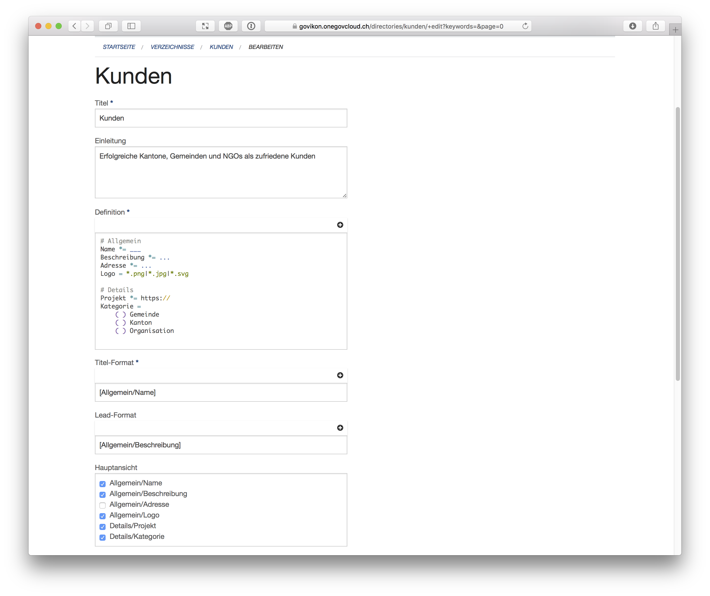
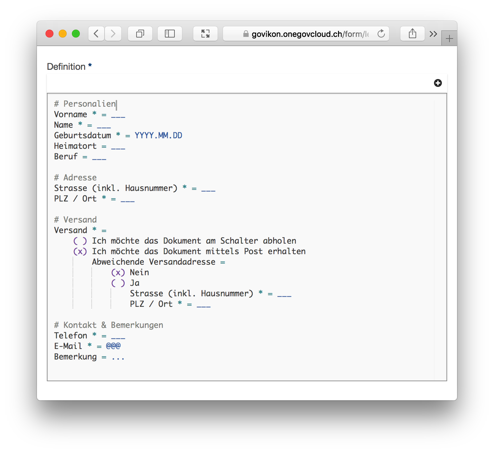

Blog
Deep Learning in Medical Research

Das Referat zeigt neue Ansätze der Datenverarbeitung im Zeitalter von Big Data und Künstlicher Intelligenz.
- The Age of Artificial Intelligence Is Here.
- All That Data (Big Data)
- Pattern Recognition (Learning vs. Programming)
- Artificial Intelligence in Medical Research
- Is Artificial Intelligence Over-Hyped?
HealthData.ai - Medical Research in Practice: www.healthdata.ai
Strukturierte Daten in Verzeichnissen
Weg von Themen
Mit dem Inhaltstyp 'Thema' bietet die OneGov Cloud eine flexible Art um Informationen zu präsentieren. Der Inhaltstyp 'Thema' ist der richtige Ansatz, solange entweder keine Schema vorhanden ist (für einfache Artikel) oder wenn quasi-strukturierte Inhalte sorgfältig eingepflegt werden.
Unstrukturierte Inhalte - selbst wenn diese sorgfältig gepflegt werden - haben aber den Nachteil, diese sich eben auch nur unstrukturiert nutzen lassen. So können einfache Listen nicht nach bestimmten Merkmalen gefiltert oder die Einhaltung eines vordefinierten Schemas kann nicht sichergestellt werden. Die neu entwickelten Verzeichnisse schaffen hier Abhilfe.
Hin zu Strukturen
Die OneGov Cloud kennt bereits strukturierte Inhalte. Veranstaltungen sind beispielsweise hochstrukturiert, ebenso Personen. Da Personen als strukturierter Inhaltstyp erfasst werden, können diese auch mit Themen verknüpft werden. Zusätzlich gibt es Formulare als Inhaltstyp mit benutzerdefinierten Schemata.
Benutzerdefinierte Schemata sind in der Entwicklung aufwändig. So kann bei Formularen das E-Mail-Feld beispielsweise verschiedene Namen tragen sowie mal oben und mal unten im Formular auftauchen.
Es muss daher über Formcode definiert werden, was für Felder existieren und was deren Funktion ist. Verzeichnisse sind in dieser Hinsicht den Formularen ähnlich. Darum setzen wir bei Verzeichnissen wie schon bei Formularen auf Formcode.
Flexibilität hat Ihren Preis
Je flexibler ein Tool, desto komplizierter ist es in der Bedienung. Je weniger flexibel ein Tool, desto weniger nützlich ist es in der Nutzung. Am Ende besteht die Kunst darin einen guten Mittelweg zu finden.
Wir glauben bei Verzeichnissen den guten Mittelweg gefunden zu haben. Bevor wir die Details beschreiben, können Sie hier ein Beispiel-Verzeichnis ansehen:

Freie Defintion der Felder
Verzeichnisse können wie Formulare jede Art von Feldern beinhalten. Alle Einträge des Verzeichnisses haben dabei die gleichen Felder und diese sind garantiert konsistent. Konsistent heisst, dass wenn ein Feld als Pflicht markiert wird, die OneGov Cloud sicherstellt, dass alle Einträge auch wirklich einen Wert im entsprechenden Feld haben. Das gilt auch, ein zusätzliches Feld erst später hinzugefügt oder ein bestehendes Feld verändert wird.
Titel und Lead
Mit frei gewählten Feldern ist nicht mehr direkt gegeben, welches Felder den Titel bzw. welches den Lead ausmacht. Wir unterstützen deshalb ein freies Textformat. Die Konfiguration erfolgt auf einfache Art und Weise.

Darstellung
Nicht alle Felder werden direkt öffentlich angezeigt. Jedes Feld kann entweder versteckt bleiben, und es kann definiert werden in welchem Inhaltsblock dieses angezeigt werden soll. Diese Zuordnung erfolgt über eine einfache Konfiguration. Sichtbare Felder werden automatisch für die Volltextsuche indexiert.
Filter
Wie bereist erwähnt, werden Filteransichten erst dank vordefinierter Strukturen möglich. Werden zum Verzeichnis Informationen als Multiple-Choice erfasst, so können diese als direkt als Filter verwendet werden.
Dabei ist der Filter spezifisch an den Feld-Typ geknüpft. Multiple-Choice Kategorien können beispielsweise kombiniert gefiltert werden (Sport und Fussball). Single-Choice Attribute hingegen sorgen für einen exklusiven Filter (Ja oder Nein).
Koordinaten
Einträge werden standardmässig auf einer grossen Karte angezeigt. Dies ermöglicht eine attraktive Darstellung von Inhalten und macht es für den User einfach Angebote in seiner Nähe zu finden.
Import
Die Daten für Verzeichnisse existieren oftmals schon irgendwo als Excel-Datei. Verzeichnisse unterstützen deshalb einen direkten Import. Dieser ist allerdings klar auf einen initialen Import ausgelegt. Ein laufender Austausch ist zwar möglich, aber nicht unbedingt empfehlenswert. Besser ist es die Daten direkt in der OneGov Cloud zu pflegen.
Vorlagen
Wir haben grossen Wert auf die Vereinfachung von Formcode gelegt (Formulare einfach erstellen mit Formcode). Auch Verzeichnisse sollen so einfach wie möglich definiert werden können. Trotzdem ist das Erstellen eines Verzeichnisses eher etwas für erfahrene Benutzer. Wie bei den Formularen möchten wir deshalb in der Zukunft gewisse Vorlagen bieten. Für den Moment verzichten wir jedoch noch darauf, da wir erst beobachten möchten, wofür Verzeichnisse effektiv eingesetzt werden. Erst wenn dies klar ist, können wir auch gute Vorlagen definieren.
Auch möchten wir in der Zukunft eine (optional kostenpflichtige) Erfassung von neuen Einträgen durch anonyme Benutzer zulassen. Diese Anfragen werden wie gewohnt über das Ticket-System in einen Workflow zur Publikation eingebunden.
Bei der Erstellung Ihres ersten Verzeichnisses sind wir Ihnen gerne behilflich. Da Verzeichnisse auch versteckt erstellt werden können, ist es auch kein Problem, wenn Sie einfach mal ein Verzeichnis zum Ausprobieren erstellen.
OneGov Cloud - Smart Government Platform: https://onegovcloud.ch
Formulare einfach erstellen mit Formcode
Für die Definition von Formularen setzt die OneGov Cloud seit Beginn auf eine Eigenentwicklung: Formcode. Mit der neusten Version wird es noch einfacher mit Formcode zu arbeiten.
Die Erstellung bzw. Definition von Formularen wird bei anderen Softwarelösungen meist über komplizierte Benutzeroberflächen realisiert. Das funktioniert gut für einfache Formulare: man verschiebt ein paar Felder in eine Box und schon steht das eigene Formular. WYSIWYG (What you see is what you get) nennt man dies im Jargon.
Für Anfänger mag dies gut sein, für Profis ist es aber ein eher mühsamer Prozess. Trotz Erfahrung wird man nicht wirklich schneller im Erstellen von Formularen. Auch fehlt meist die Möglichkeit das ganze Formular oder einen Teil davon in ein anderes Formular zu kopieren.
Formcode
Statt auf ein komplexes UI Tool haben wir von Anfang an auf eine Art eigene Programmiersprache gesetzt. Intern nennen wir unsere Programmiersprache "Formcode".
Formcode ermöglicht das einfache Erstellen von Formularen ganz ohne komplizierte Benutzeroberfläche. Dabei sollte der Code zur Definition eines Formulars möglichst einem Formular - wie es als Eingabemaske aussieht - ähneln. Wie die untenstehende Formulardefinition in Formcode zeigt, gelingt dies recht gut.

Nichts für Anfänger?
Zu unserer eigenen Überraschung durften wir bald feststellen, dass viele unserer Benutzer mit dem Code selbstständig gut zurecht kommen. Anhand der Beispiele, welche wir mitliefern, wurden effektiv eigene Formulare ohne weitere Anleitung erstellt.
Verständlicherweise haben wir mehrfach Anfragen nach einer Dokumentation erhalten. Eine solche gab es bis heute noch nicht. Dokumentationen sind zwar nützlich, müssen aber gepflegt werden. Zu oft geschieht dies über die Jahre zu wenig und die Dokumentation veraltet und wird unbrauchbar.
Vorlagen
Als Alternative zu einer Dokumentation haben wir neu eine Sammlung von Vorlagen zusammengestellt. Das erlaubt das Zusammen-Klicken von Formularen, ohne dass das Know-How von Formcode verloren geht. Ein versierter Benutzer mit etwas Übung wird den Code weiter direkt tippen und arbeitet so effizienter. Ein neuer Benutzer kann dank der Snippets selbstständig neue Formulare erstellen.
Formcode hat noch einen weiteren Vorteil; in den Snippets erscheinen bisher unbekannte Arten von Formularfeldern. Wussten Sie beispielsweise dass wir ein Feld f√ºr die Unternehmens-Identifkationsnummer inkl. Validierung haben? Wir auch nicht üòâ.
OneGov Cloud - Smart Government Platform: https://onegovcloud.ch

Schnittstelle opendata.swiss für Wahl- und Abstimmungsresultate
Das Thema Open Government Data (OGD) gewinnt politisch an Gewicht. Der Bund hat das Portal opendata.swiss lanciert. Das Portal soll als Verzeichnis von ODG-Datensätzen dienen. In Zusammenarbeit mit der Betreiberin des OGD-Portals des Bundes hat seantis eine Schnittstelle zur automatischen Publikation bzw. Registrierung als Linked Open Data der Wahl- und Abstimmungsdaten der Kantone Graubünden und Zug auf opendata.swiss entwickelt.
Die Datensätze von Wahl- und Abstimmungsresultaten werden auf dem Portal opendata.swiss aufgelistet. Der Ablauf des Datenaustausches sieht wie folgt aus:
- Die Datenportale der Kantone stellen jeweils einen "catalog endpoint“ zur Verfügung (z.B. https://abstimmungen.gr.ch/catalog.rdf)
- Der "catalog endpoint“ ist ein Verzeichnis aller Datensätze mit Links zu den Daten.
- Der Harvester von opendata.swiss "erntet" die Daten gemäss "catalog endpoint“ automatisch periodisch.
- opendata.swiss listet die die Datensätze auf dem eigenen Portal auf und verlinkt diese auf die Datenportale der Kantone.
Dies alles geschieht automatisch ohne Zutun der Kantonsverantwortlichen. Neue Abstimmungs- bzw. Wahlresultate werden nach der Publikation auf der OneGov Cloud automatisch auch auf opendata.swiss publiziert.
Die Endpoints können neben dem Portal des Bundes auch von beliebigen anderen Services als Katalog im RDF-Format für alle Datensätze eines OneGov Cloud Datenportals verwendet werden.
- OneGov Cloud: https://www.onegovcloud.ch
- Wahlen & Abstimmungen Kanton Zug: https://wab.zug.ch/
- Wahlen & Abstimmungen Kanton St. Gallen: https://abstimmungen.gr.ch

Verbesserte Kartenansicht mit geodätischen Linien
Flüge werden neu als geodätische Linien (https://de.wikipedia.org/wiki/Geodäte) angezeigt. Der geodätische Weg stellt auf der Karte eine näherungsweise korrekte Darstellung transatlantischer Flüge sicher. Zudem werden Flughäfen je nach Anzahl Starts und Landungen in unterschiedlicher Grösse dargestellt. So ist auf einen Blick ersichtlich, welche Flughäfen öfters angeflogen wurden.
Die Neuerungen sind ab sofort für alle User von myControl.aero verfügbar. Wir danken für das wertvolle Feedback all unserer User.
myControl.aero - Pilot Logbook in the Cloud: https://mycontrol.aero